Home / Writing
Systems, not hype.
Field notes on building, evaluating, and operating AI systems. Practical guides, original diagrams, and transparent reviews of the books shaping the work.
Guides
-
SYSTEMS JOURNAL · FIELD GUIDE · 14 MIN
System 1, System 2: How to Give Your AI a Fast Path and a Slow Path
Why a production LLM system should run two paths, a fast default and a slow verified escalation, and how to build the router, the gate, and the evals that keep it honest.
-
SYSTEMS JOURNAL · FIELD GUIDE · 13 MIN
How to Shrink a Transformer for CPU Serving Without Losing Your Mind (or Accuracy)
A field manual for distilling, pruning, and quantizing language models for CPU-only, latency-critical serving, and why most of the tricks fail before one works.
SYSTEMS DISCUSSED · NOT AN ENDORSEMENT- ONNX
-
SYSTEMS JOURNAL · FIELD GUIDE · 14 MIN
Why Your Voice Agent Feels Rude: Latency, Turn-Taking, and Barge-In
A systems view of real-time voice agents, why 800 ms feels broken, and how to engineer the pipeline, the turn-taking model, and the evals so conversations feel human.
-
SYSTEMS JOURNAL · FIELD GUIDE · 12 MIN
How to Build a RAG System That Says "I Don't Know"
Retrieval-augmented generation fails quietly. Here is how to engineer retrieval, grounding, citation checks, and abstention so wrong answers become honest refusals.
-
SYSTEMS JOURNAL · FIELD GUIDE · 12 MIN
How to Route Intents with Confidence: The Hybrid Classifier Pattern
Why a single model should never decide everything, and how to build a confidence-gated cascade of rules, a small classifier, and an LLM fallback with self-correcting labels.
-
SYSTEMS JOURNAL · FIELD GUIDE · 16 MIN
Why Your LLM Judge Is Biased (and How to Audit It)
LLM-as-a-judge is the cheapest evaluator you will ever have and the easiest to fool. A practical audit protocol for position bias, verbosity bias, self-preference, and agreement with humans.
-
SYSTEMS JOURNAL · FIELD GUIDE · 11 MIN
How to Put Guardrails on an AI Agent Without Killing It
Agents fail by doing things, not by saying things. A layered defense of allow-lists, budgets, approvals, and audit trails, plus a red-team loop that proves the guardrails hold.
-
SYSTEMS JOURNAL · FIELD GUIDE · 13 MIN
How Semantic Caching Cuts LLM Cost, and Why It Can Serve Wrong Answers
The economics of LLM caching, exact vs. semantic hits, threshold tuning, invalidation, and the subtle ways a cache can return a confidently wrong answer to a different question.
-
SYSTEMS JOURNAL · FIELD GUIDE · 12 MIN
How to Ship a Model Safely: Shadow, Canary, and the Rollback Button
Offline metrics do not predict production. A deployment ladder of shadow traffic, canaries with guardrail metrics, and automatic rollback, the SRE way.
-
SYSTEMS JOURNAL · FIELD GUIDE · 11 MIN
Why Your Training Data Is the Real Model: Curating Data for Small LMs
Architecture is a commodity; data is the moat. How to find noisy, ambiguous, and memorized examples using the model's own training dynamics, and fix them.
Book reviews
-
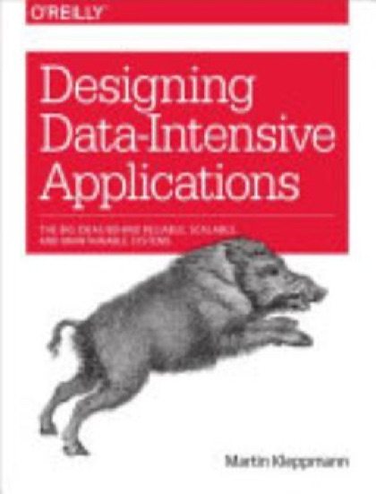
SYSTEMS JOURNAL · BOOK REVIEW · ★★★★★Designing Data-Intensive Applications
Martin Kleppmann
A rigorous conceptual guide to the trade-offs beneath storage, replication, transactions, and data processing. Especially useful when readers want architecture principles rather than a tool cookbook.
-
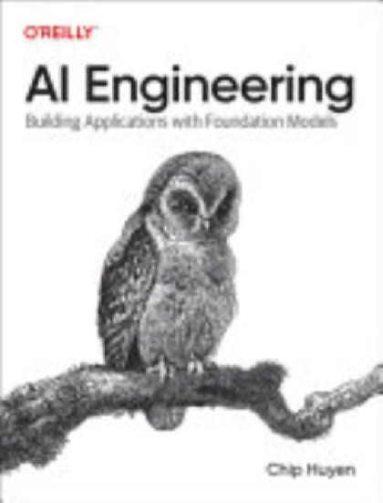
SYSTEMS JOURNAL · BOOK REVIEW · ★★★★½AI Engineering: Building Applications with Foundation Models
Chip Huyen
A broad, systems-minded guide to building applications around foundation models. Its strongest promise is a disciplined way to frame application choices and evaluation, not a timeless catalog of models or a substitute for implementation practice.
-
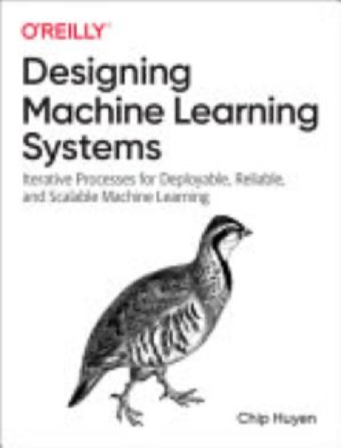
SYSTEMS JOURNAL · BOOK REVIEW · ★★★★½Designing Machine Learning Systems
Chip Huyen
A strong systems-level guide to the work surrounding an ML model. Its durable value is the lifecycle perspective; use current sources for newer foundation-model practices and tool details.
-
SYSTEMS JOURNAL · BOOK REVIEW · ★★★★★
Build a Large Language Model (From Scratch)
Sebastian Raschka
A focused implementation path for understanding GPT-style language models by building their components. Best for readers prepared to write and debug code, not as a course in scaling or operating frontier models.
-
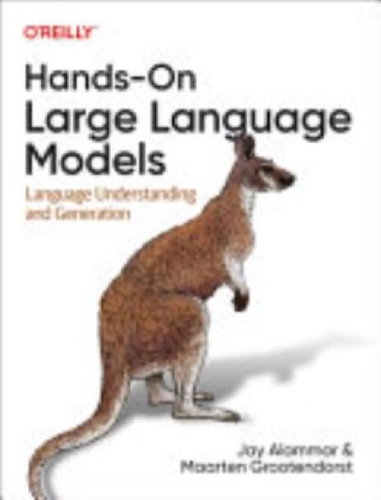
SYSTEMS JOURNAL · BOOK REVIEW · ★★★★½Hands-On Large Language Models
Jay Alammar and Maarten Grootendorst
A broad, visual introduction to language-model applications and representation techniques. Its appeal is the combination of diagrams and practical workflows, while production rigor and mathematical depth call for additional resources.
-
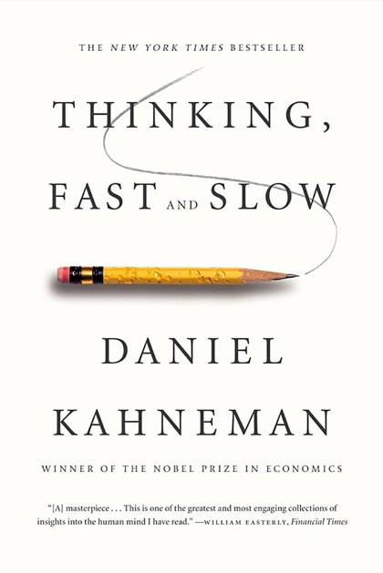
SYSTEMS JOURNAL · BOOK REVIEW · ★★★★½Thinking, Fast and Slow
Daniel Kahneman
Not an AI book, and one of the most useful books an AI engineer can read. It explains both the System 1 and System 2 metaphor and the human biases that corrupt our data and decisions.
-
SYSTEMS JOURNAL · BOOK REVIEW · ★★★★½
Deep Learning
Ian Goodfellow, Yoshua Bengio, Aaron Courville
Not a quick read and not about LLMs, but it is the theory base that makes everything after it legible. Read Part II properly once and keep it as a reference forever.
-
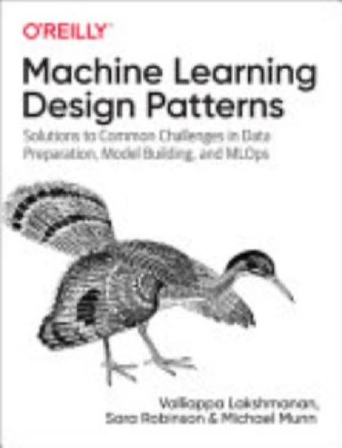
SYSTEMS JOURNAL · BOOK REVIEW · ★★★★☆Machine Learning Design Patterns
Valliappa Lakshmanan, Sara Robinson, Michael Munn
The best book for turning tribal ML knowledge into a shared vocabulary. Its patterns make design reviews faster and junior engineers productive sooner.
-
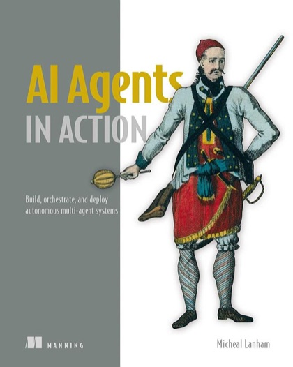
SYSTEMS JOURNAL · BOOK REVIEW · ★★★★☆AI Agents in Action
Micheal Lanham
A broad, practical on-ramp to building LLM agents with lots of runnable examples. Pair it with a security-minded resource before you let an agent touch production.
-
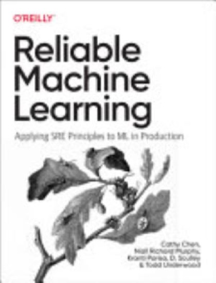
SYSTEMS JOURNAL · BOOK REVIEW · ★★★★½Reliable Machine Learning: Applying SRE Principles to ML in Production
Cathy Chen, Niall Richard Murphy, Kranti Parisa, D. Sculley, Todd Underwood
The book that treats ML as an operational discipline. Essential for anyone on call for a model, and for leaders deciding how ML teams should be organized.
-
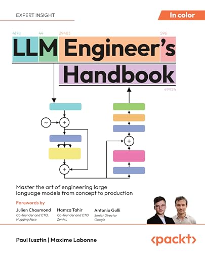
SYSTEMS JOURNAL · BOOK REVIEW · ★★★★½LLM Engineer's Handbook: Master the Art of Engineering Large Language Models from Concept to Production
Paul Iusztin and Maxime Labonne
A hands-on production manual for LLM pipelines, strongest on RAG, evaluation, and the deploy and monitor loop, not a theory of model internals.
-
 SYSTEMS JOURNAL · BOOK REVIEW · ★★★★½
SYSTEMS JOURNAL · BOOK REVIEW · ★★★★½Agentic Design Patterns: A Hands-On Guide to Building Intelligent Systems
Antonio Gulli
A useful pattern reference for agent builders, strongest as a shared vocabulary for design reviews, not a framework tutorial.
-
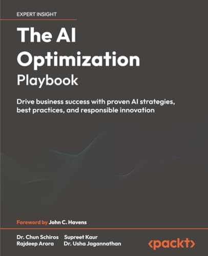
SYSTEMS JOURNAL · BOOK REVIEW · ★★★★☆The AI Optimization Playbook: Drive business success with proven AI strategies, best practices, and responsible innovation
Dr. Chun Schiros, Supreet Kaur, Rajdeep Arora, and Dr. Usha Jagannathan
A strategy-first guide for leaders and senior practitioners, strongest on project selection and measurement, not a model-building manual.
-
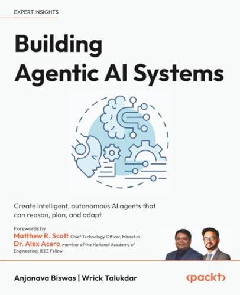
SYSTEMS JOURNAL · BOOK REVIEW · ★★★★☆Building Agentic AI Systems: Create intelligent, autonomous AI agents that can reason, plan, and adapt
Anjanava Biswas and Wrick Talukdar
A compact enterprise guide to agentic systems, strongest on orchestration and governance, not a deep framework manual.
-
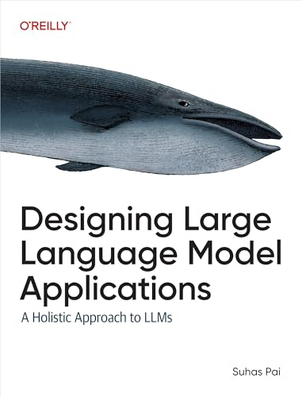
SYSTEMS JOURNAL · BOOK REVIEW · ★★★★☆Designing Large Language Model Applications: A Holistic Approach to LLMs
Suhas Pai
A clear design-first guide for LLM applications, strongest on failure modes and model choice, not a framework tutorial.
-
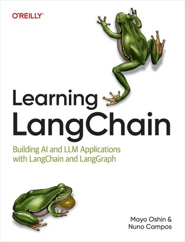
SYSTEMS JOURNAL · BOOK REVIEW · ★★★★☆Learning LangChain: Building AI and LLM Applications with LangChain and LangGraph
Mayo Oshin and Nuno Campos
A clear entry point to LangChain and LangGraph, strongest on chains, retrieval, and agents, not a deep systems theory book.
-
 SYSTEMS JOURNAL · BOOK REVIEW · ★★★★☆
SYSTEMS JOURNAL · BOOK REVIEW · ★★★★☆Generative AI with LangChain: Build production-ready LLM applications and advanced agents using Python, LangChain, and LangGraph
Ben Auffarth and Leonid Kuligin
A thorough production guide for LangChain and LangGraph, strongest on RAG and advanced agents, not a short introduction.
-
 SYSTEMS JOURNAL · BOOK REVIEW · ★★★★☆
SYSTEMS JOURNAL · BOOK REVIEW · ★★★★☆Building LLMs for Production: Enhancing LLM Abilities and Reliability with Prompting, Fine-Tuning, and RAG
Louis-Francois Bouchard and Louie Peters
A practical production guide centred on evaluation, strongest on reliability at serving scale, with tool details to verify against current versions.
-
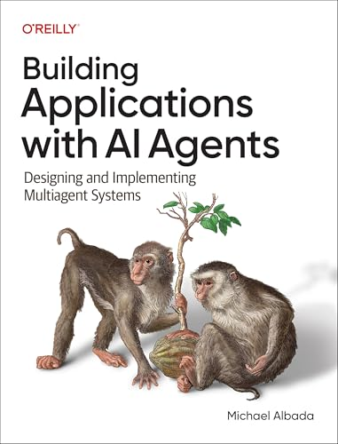
SYSTEMS JOURNAL · BOOK REVIEW · ★★★★☆Building Applications with AI Agents: Designing and Implementing Multiagent Systems
Michael Albada
A research-based guide to multi-agent design, strongest on patterns and coordination, not a framework quick start.
-
 SYSTEMS JOURNAL · BOOK REVIEW · ★★★★☆
SYSTEMS JOURNAL · BOOK REVIEW · ★★★★☆Learn Model Context Protocol with Python: Build agentic systems in Python with the new standard for AI capabilities
Christoffer Noring
A timely, narrow guide to MCP in Python, strongest on servers and clients, not a general agent design book.